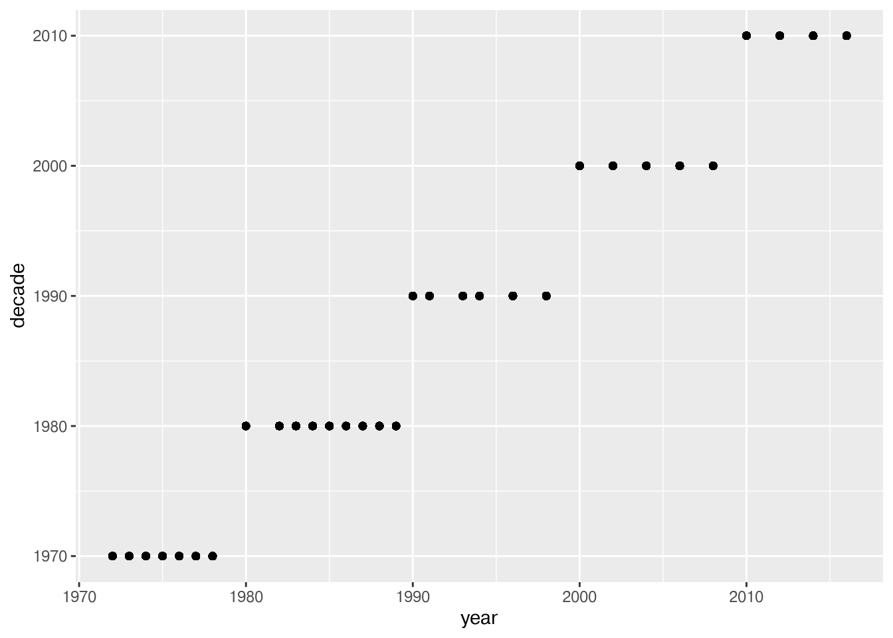
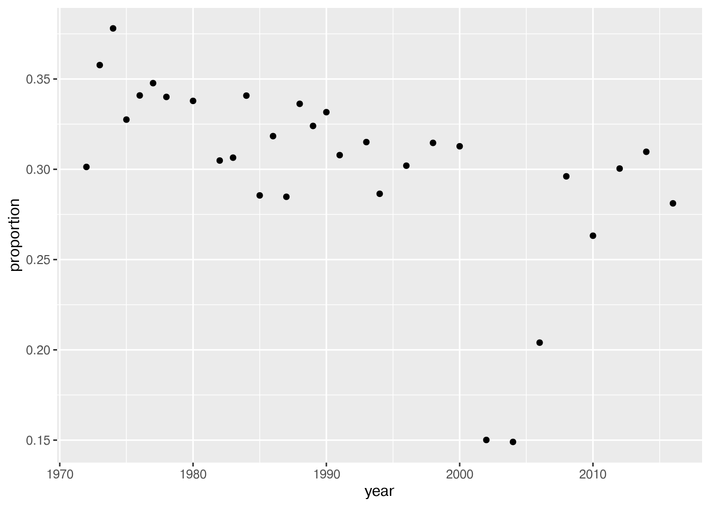

# reads in csv file to dataframe happy
happy <- read.csv("https://raw.githubusercontent.com/srvanderplas/stat151-homework/main/happy.csv")2024 Stat 151 Midterm Exam
Note: This exam was given as a take-home exam - students had about 2 days to complete the exam.
Your exam will be different - you will have to work in both R and python.
This exam did not cover functions, because of differences in where spring break fell relative to the semester start.
If the exam had covered functions, I would probably have asked you to write a function that did this task:
Write a function that takes the year and a data frame, and calculates the proportion of very happy 20 year olds for that year.
Then, I would have had you use that function to assemble the summary data frame.
Instructions
Create a folder for this exam on your computer.
Save this file into that folder.
When you are finished with the exam, compile the document. Make sure all of your code runs!
Upload a zip file of your work and any necessary file dependencies to Canvas.
Description
The data is a small sample of variables related to happiness from the general social survey (GSS). The GSS is a yearly cross-sectional survey of Americans, run since 1972. We combine data for more than 25 years to yield over 60 thousand observations, and of the over 5,000 variables, we select some variables that are related to happiness:
Format
A data frame with 62466 rows and 11 variables
Details
year. year of the response, 1972 to 2018.
age. age in years: 18–89 (89 stands for all 89 year olds and older).
degree. highest education: lt high school, high school, junior college, bachelor, graduate.
finrela. how is your financial status compared to others: far below, below average, average, above average, far above.
happy. happiness: very happy, pretty happy, not too happy.
health. health: excellent, good, fair, poor.
marital. marital status: married, never married, divorced, widowed, separated.
sex. sex: female, male.
polviews. from extremely conservative to extremely liberal.
partyid. party identification: strong republican, not str republican, ind near rep, independent, ind near dem, not str democrat, strong democrat, other party.
wtssall. probability weight. 0.39–8.74
Tasks
Read in the data and create a data frame that you will work with for this exam.
Create a new column variable,
decade, in your data frame.
- You will need to take the response year and truncate it to the decade, so that 1972 becomes 1970 and 1989 becomes 1980. You can use a series of logical statements if you want, but it may be more effective to find a numerical function or combination of functions that will perform the operation you want.
floor()andmath.floor()in R and python respectively are good places to start. - Create a scatterplot (use
geom_point) of your happy year vs decade to show that your approach succeeded.
- Create a new data set by iterating through each year to find the proportion of people who are very happy. Use a for loop. Using your new data frame, plot the proportion of very happy people over time.
Note: You may have to pass an argument to the mean function to tell it to exclude missing values from the calculation, such asna.rmorskipna. Or, you can remove the NAs from happy using a function likena.omitordropna, but be careful to only drop rows with an NA in variables we care about, likehappyoryear.
Solutions
Copy the list of tasks here and put your code for each task below the task description. Your code should be well commented.
If you cannot figure out how to do a task, provide a list of steps that you think are necessary to accomplish that task and provide as much detail in terms of how you would accomplish that in code as possible.
If your code does not compile, add , error = T to the chunk header so that the rest of the document will still compile.
Read in the data and create a data frame
Create a new variable, decade
library(ggplot2)Warning: package 'ggplot2' was built under R version 4.4.3# adds new column and processes by taking year and subtracting last digit through modular operator
happy$decade <- (happy$year - happy$year %% 10)
# plots year against decade column from dataframe df
p <- ggplot(happy, aes(year, decade)) + geom_point()
# see plot
p
Happy People per Year
# Create dataframe with happiness and year
df <- data.frame(isHappy = happy$happy,
year = happy$year)
# change isHappy values into 1s (success) and 0s (failure) based on if it is "very happy" or not
df[df == "not too happy" | df == "pretty happy"] = 0
df[df == "very happy"] = 1
df$isHappy = as.numeric(df$isHappy)
# creates empty dataframe df_proportions
df_proportions <- data.frame(year = NULL, proportion = NULL)
# Goes through unique years, creates subsets, and finds the proportion of people who are happy using the sum of 1s (successes) and divides by the length of the column (total)
for (i in unique(df$year)) {
sub_df = subset(df, year == i)
sum(sub_df$isHappy)
df_proportions = rbind(df_proportions, data.frame(year = i, proportion = sum(sub_df$isHappy/length(sub_df$isHappy), na.rm = T)))
}
# shows the dataframe of proportions
df_proportions year proportion
1 1972 0.3013019
2 1973 0.3577128
3 1974 0.3780323
4 1975 0.3275168
5 1976 0.3408939
6 1977 0.3477124
7 1978 0.3400783
8 1980 0.3378747
9 1982 0.3048387
10 1983 0.3064415
11 1984 0.3408011
12 1985 0.2855280
13 1986 0.3183673
14 1987 0.2847719
15 1988 0.3362593
16 1989 0.3240078
17 1990 0.3316327
18 1991 0.3078444
19 1993 0.3150685
20 1994 0.2864305
21 1996 0.3019972
22 1998 0.3146186
23 2000 0.3127441
24 2002 0.1500904
25 2004 0.1490043
26 2006 0.2039911
27 2008 0.2960949
28 2010 0.2632094
29 2012 0.3004053
30 2014 0.3096927
31 2016 0.2811301# creates scatter plot of proportions incremented by year
p <- ggplot(df_proportions, aes(year, proportion)) + geom_point()
# shows scatter plot
p